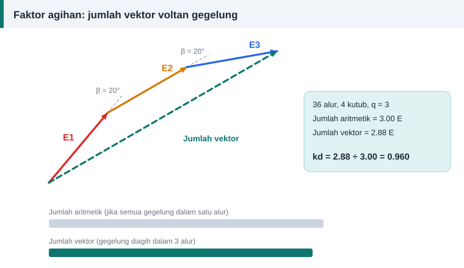

Pengiraan belitan
Faktor Agihan dan Faktor Belitan Motor Tiga Fasa
Takrif. Faktor agihan, kd, ialah nisbah jumlah vektor voltan gegelung dalam satu kumpulan fasa kepada jumlah aritmetiknya. Faktor belitan, kw, ialah hasil darab faktor pic dan faktor agihan.


Kuantiti asas
Dua kuantiti diperlukan sebelum kd boleh dikira.
- Bilangan alur per kutub per fasa: q = S ÷ (3 × P).
- Sudut elektrik antara dua alur bersebelahan: β = 180° × P ÷ S.
Bagi belitan tiga fasa dengan jalur fasa 60°, hasil darab q × β sentiasa 60°.
Rumus faktor agihan
kd = sin(q × β ÷ 2) ÷ (q × sin(β ÷ 2))
Oleh sebab q × β = 60°, rumus itu boleh ditulis dalam sebutan q sahaja:
kd = 0.5 ÷ (q × sin(30° ÷ q))
Nilai bagi q yang lazim
| q | β | kd |
|---|---|---|
| 1 | 60° | 1.000 |
| 2 | 30° | 0.966 |
| 3 | 20° | 0.960 |
| 4 | 15° | 0.958 |
| 5 | 12° | 0.957 |
| 6 | 10° | 0.956 |
Apabila q bertambah, kd menghampiri 3 ÷ π ≈ 0.955.
Tafsiran geometri
Rajah menunjukkan kes q = 3. Tiga voltan gegelung mempunyai magnitud E yang sama tetapi berbeza fasa 20°. Jumlah vektornya 2.88 E, manakala jumlah aritmetiknya 3 E. Nisbah kedua-duanya ialah 0.960.
Faktor belitan
kw = kp × kd
Dua contoh:
- Belitan dua lapis 36 alur, 4 kutub, rentang 1–8. kp = 0.940 dan kd = 0.960, maka kw = 0.902.
- Belitan satu lapis 24 alur, 4 kutub. kp = 1 dan kd = 0.966, maka kw = 0.966.
Belitan pecahan
Jika q bukan nombor bulat, misalnya 27 alur 6 kutub dengan q = 1.5, tulis q sebagai pecahan termudah z ÷ n dan gunakan z di tempat q dalam rumus kd. Untuk q = 3 ÷ 2, z = 3 dan kd = 0.960.
Kepentingan praktikal
- kw masuk terus ke dalam formula lilitan per fasa. Faktor yang lebih kecil memerlukan lebih banyak lilitan untuk fluks yang sama.
- Agihan dan pemendekan pic mengurangkan harmonik jauh lebih banyak daripada ia mengurangkan komponen asas. Itulah sebabnya belitan teragih digunakan walaupun kw kurang daripada satu.
- Apabila jenis belitan ditukar semasa lilitan semula, hasil darab N × kw mesti dikekalkan supaya fluks setiap kutub tidak berubah.
Rujukan dan bacaan lanjut
Artikel berkaitan
Pic Kutub, Rentang Gegelung dan Faktor Pic
Rentang gegelung yang lebih pendek daripada pic kutub menjimatkan kuprum dan melicinkan gelombang voltan. Pelajari cara mengira pic kutub, rentang dan faktor pic dengan contoh.
Formula Lilitan Per Fasa: E = 4.44 f Φ N kw Dijelaskan
Satu persamaan menghubungkan voltan, frekuensi, fluks dan bilangan lilitan. Fahami asal-usul angka 4.44 dan cara menggunakannya untuk mengira lilitan per fasa motor.
Belitan Lap dan Belitan Sepusat: Cara Mengenal dan Melilitnya
Dua bentuk gegelung paling biasa ditemui dalam stator motor aruhan ialah lap dan sepusat. Ketahui rupa, kelebihan, cara membaca rentangnya dan bila setiap satu digunakan.